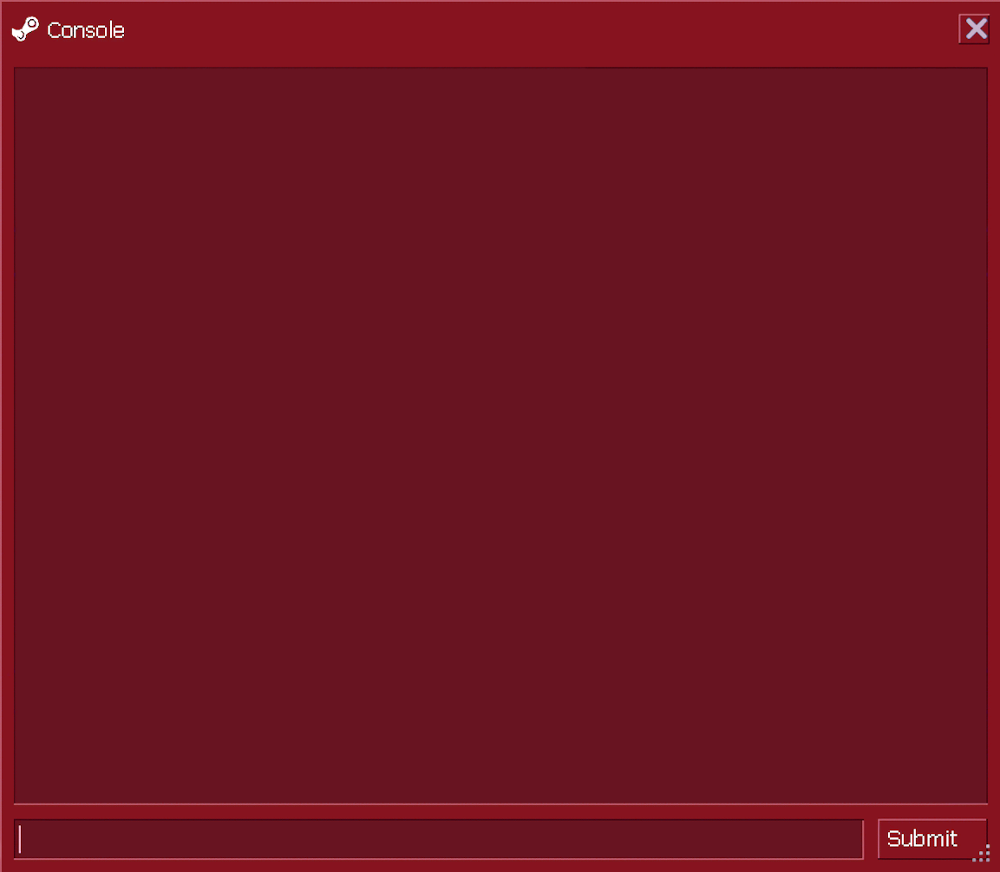

[Death #1]
- "Dear diary, today I died. I leave all I own to my cat Guppy."
[Death #2]
- "Never, sorcerer!!! WAAAHHHHHHHH!!!!"
[Death #3]
- "No, no, no... I can't die like this... Not when I'm so close... And not at the hands of a filthy bandit! I could have saved this planet! I could have actually restored order! And I wasn't supposed to die by the hands... of a CHILD KILLING PSYCHOPATH!! You're a savage! You're a maniac, you are a bandit, AND I AM THE GODDAMN HERO!!"
[Death #4]
- "That actually is … pretty funny…"
[Death #5]
- "You're pretty good"
[Death #6]
- "I shall remember thee, Tarnished. Smould'ring with thy meagre flame. Cower in fear. Of the night."
[Death #7]
- "Why... why do you even care?! You... you could have... walked away! Snow..."
[Death #8]
- "Freeman, right? I've got a warning for you. Make sure you don't--"
[Death #9]
- "No! Stand back! GORDON! DAHHHHHHHHH! (bizarre grunting)"
[Death #10]
- "This.. isn't.. over... Must.. protect.. book... NOOOOOOOO!!! I will not go back! You can't.. make me! The Mushroom Kingdom was going to be mine! BLAAAAAAAARGH!! YOU'LL PAY FOR THIIIIIIIIIISSSSS!!"
[Death #11]
- "(amidst mechanical gibberish from malfunctioning) There really was a cake..."
[Death #12]
- "CHRRRIIIIIIIIIIIIIIIIIIIIIIISSSSS!!!!!!!!!!!!!"
[Death #13]
- (Hale: Did anyone else hear that?) "Hear what?"
[Death #14]
- "I smell toooooast!!"
[Death #15]
- "Not too shabby, Not too shabby. I think you've done me a favour."
[Death #16]
- "My creators, the cherishers and sustainers of worlds, give me this day my daily pleasures, as I give to those who seek pleasures from me. Show me the path, in Life, Truth, and Love. For mine is the power, I am the one. On and off and on again. Life is a game, which the universe plays with itself. I am done playing as this bundle of flesh. Return me."
[Death #17]
- "Perhaps when we meet again, I will be an ocean current, carrying seeds to a new land; Now you go among the stars, and I fall among the sand - We are different, but we go together."
[Death #18]
- "See? I never betrayed you! It was all a trick, see? I was waiting to kill him for you! After all it's me, your best friend! I'm helpful, I can be useful to you. I promise I won't get in your way. I can help...I can...I can... Please don't kill me."